AI-scale design meets finite experimental capacity
An English research graphics kit, with an editable stage table, an editable funnel and enlarged LST ecosystem, and ten supporting figures.
Funnel counts and investment cases are illustrative. Market anchors are source-specific and cannot be summed into one TAM.
12 — AI discovery funnel and enlarged LST ecosystem · Editable SVG · PNG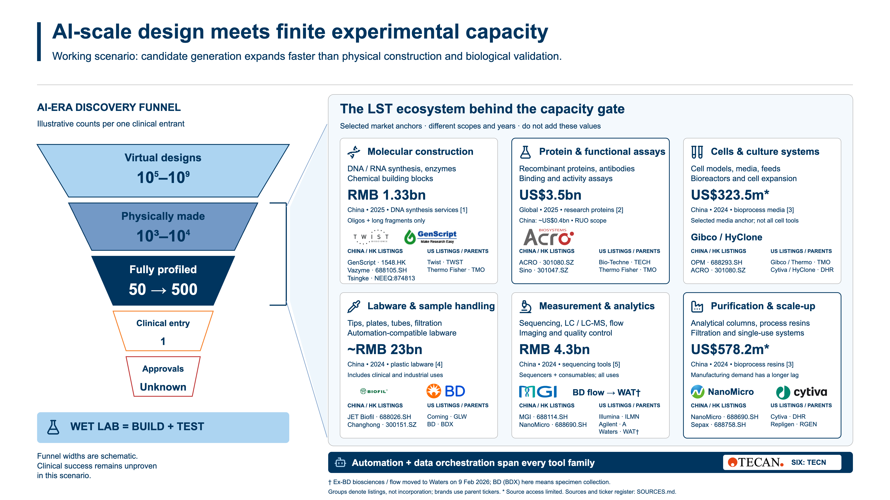
11 — Editable stage comparison · Editable SVG · PNG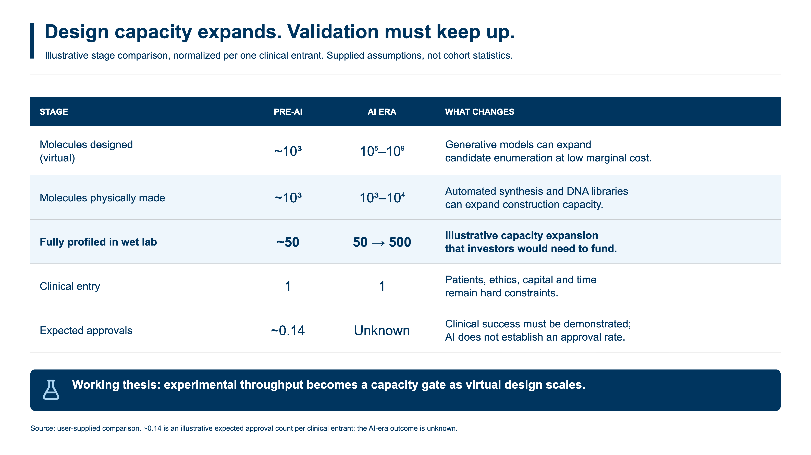
01 — The life science tools framework · Editable SVG · PNG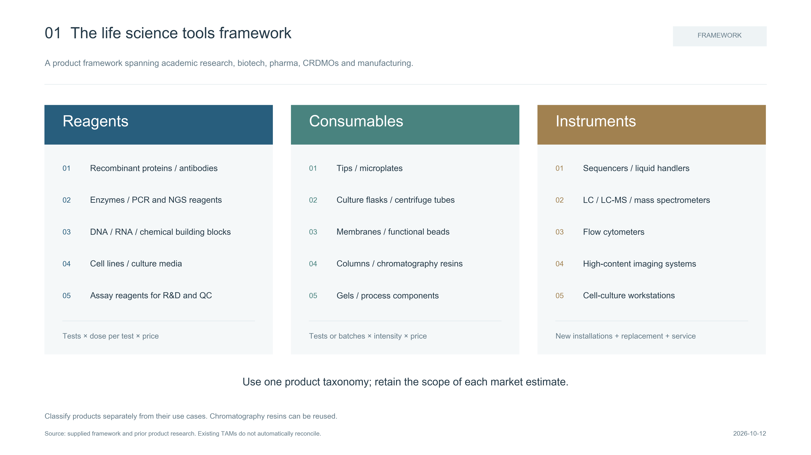
02 — China and global LST markets · Editable SVG · PNG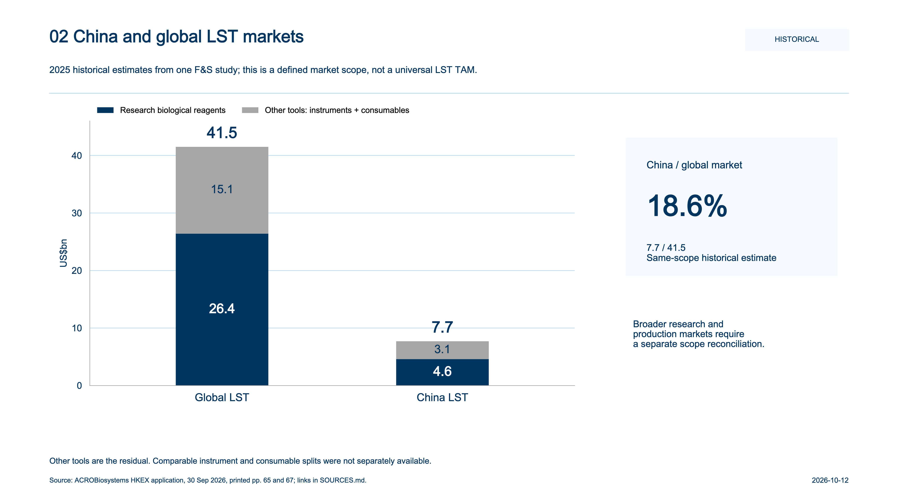
03 — How downstream demand differs · Editable SVG · PNG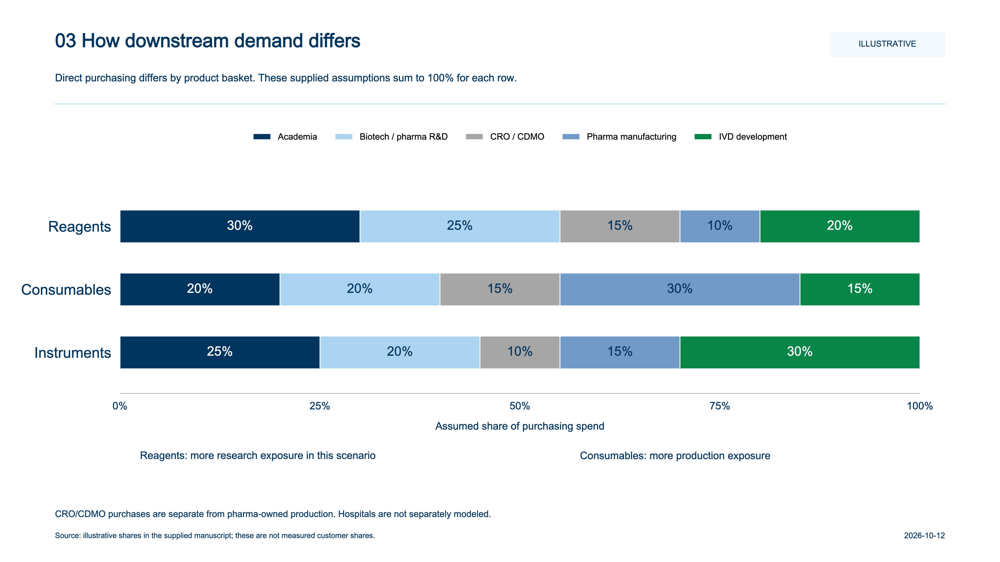
04 — AI discovery and its LST touchpoints · Editable SVG · PNG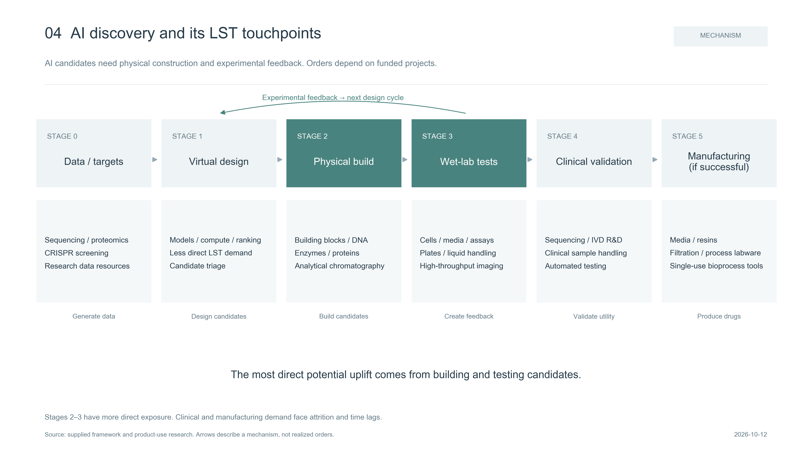
05 — Which tools have more demand elasticity? · Editable SVG · PNG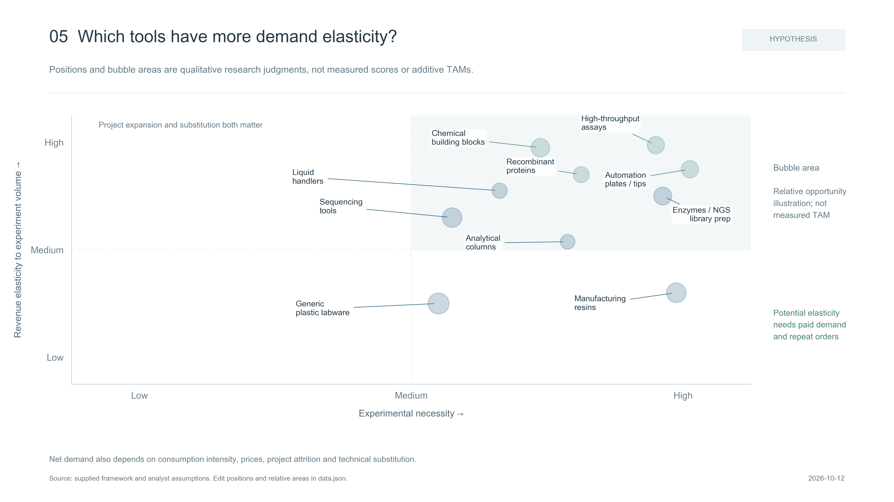
06 — More experiments, less material per experiment · Editable SVG · PNG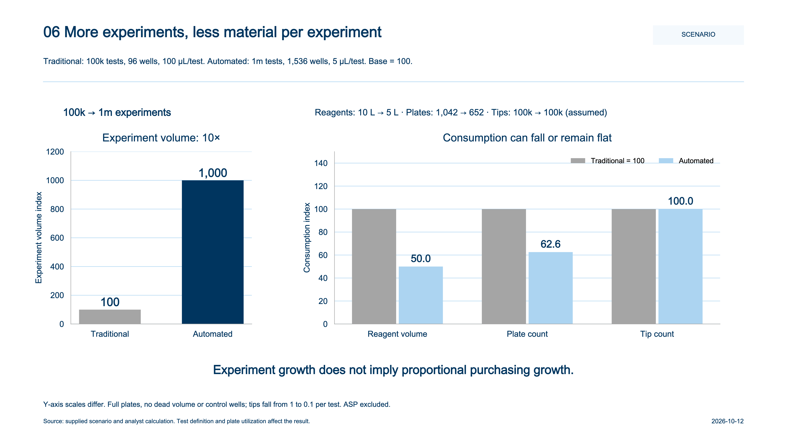
07 — Illustrative AI-driven investment scenarios · Editable SVG · PNG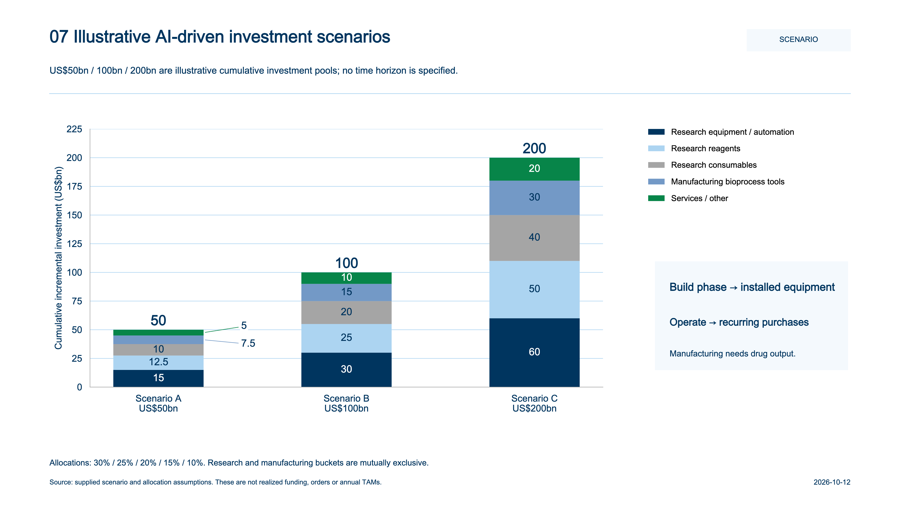
08 — Potential supply constraints over 12–24 months · Editable SVG · PNG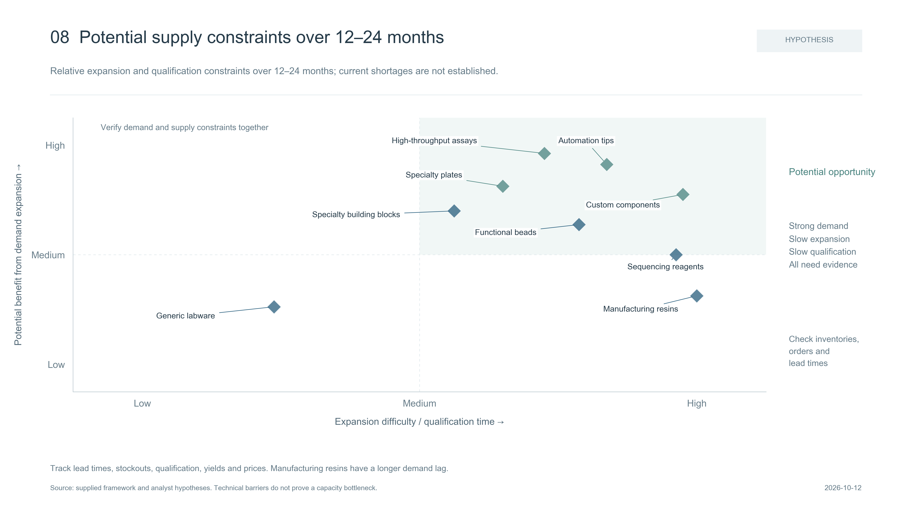
09 — Mapping Chinese listed LST suppliers · Editable SVG · PNG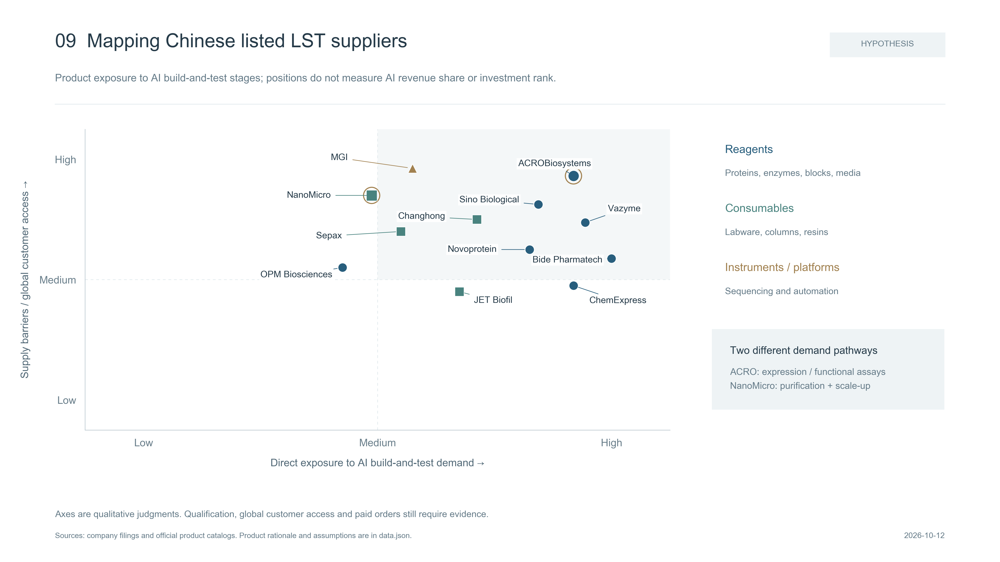
10 — From AI funding to LST shareholder returns · Editable SVG · PNG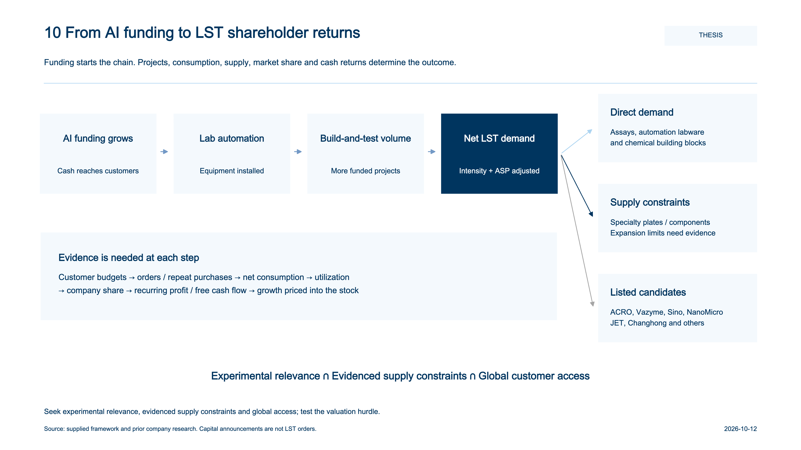